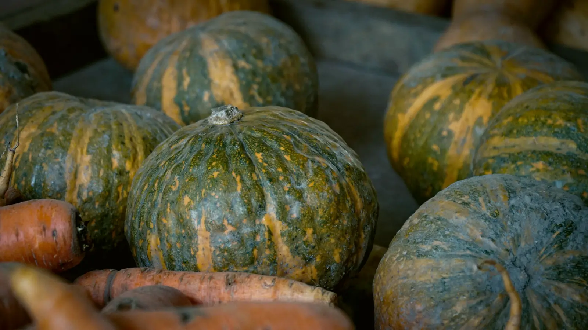
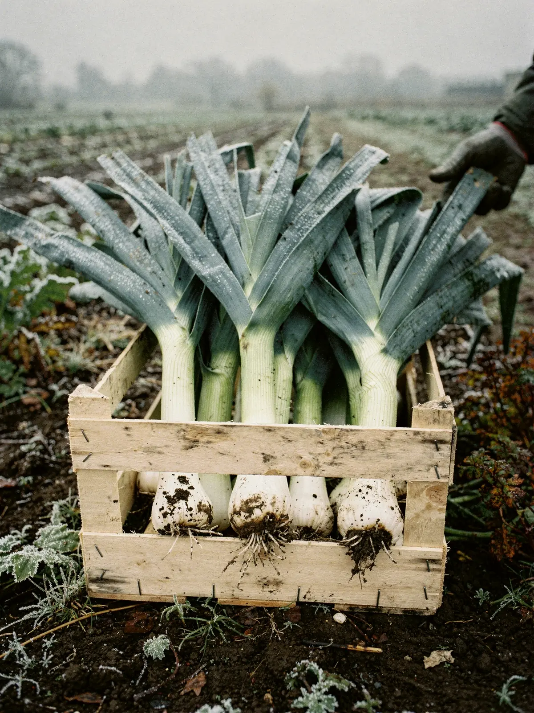
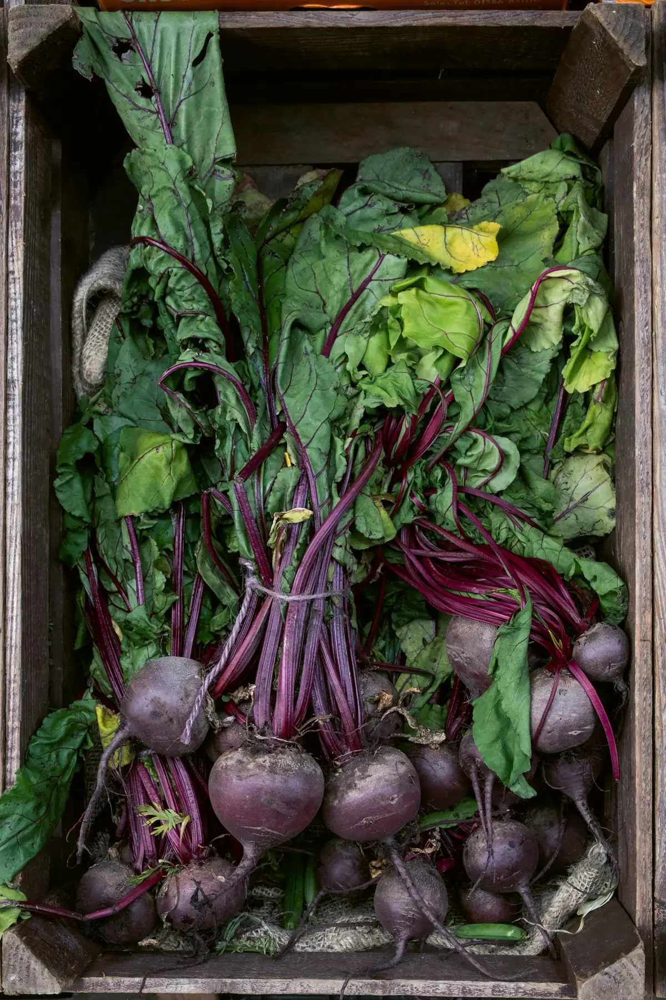
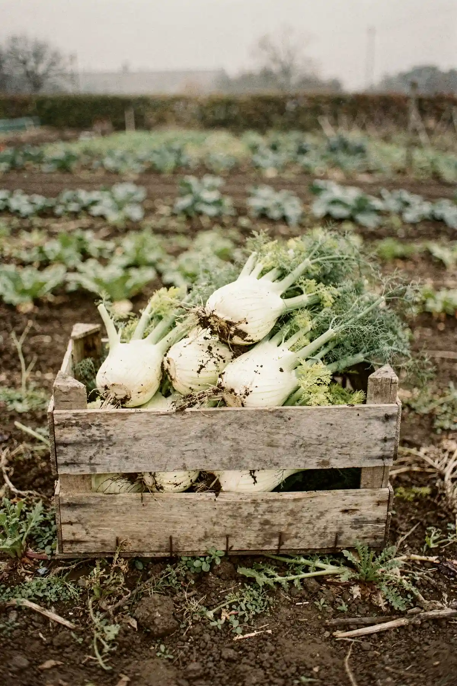
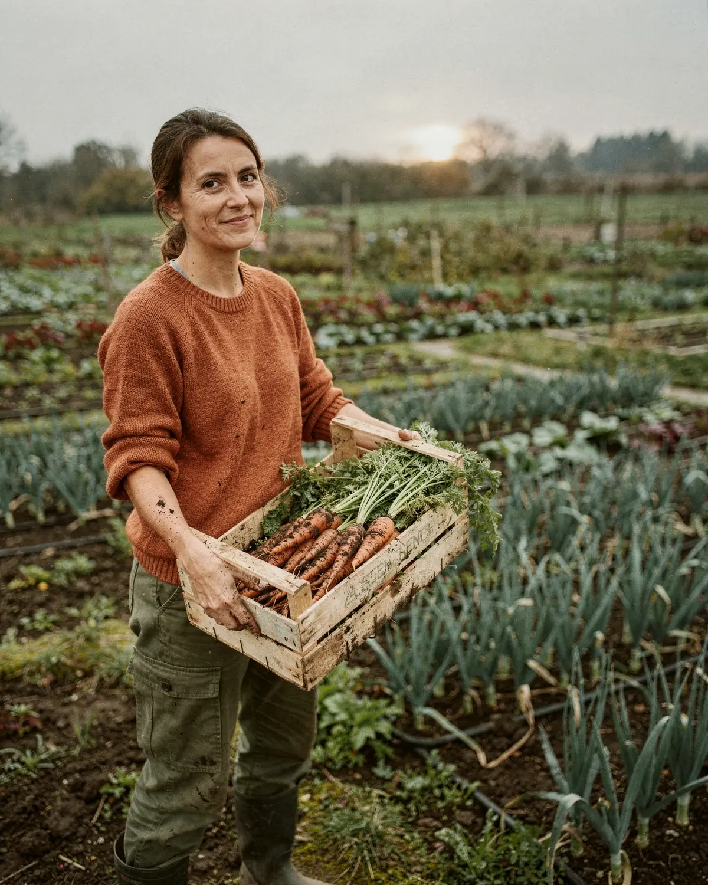
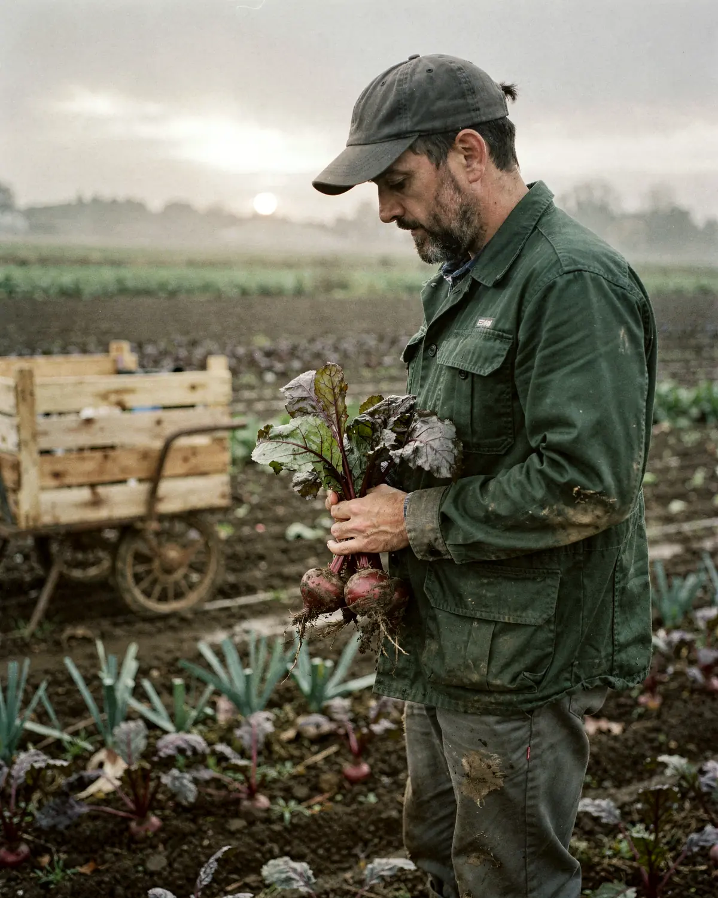
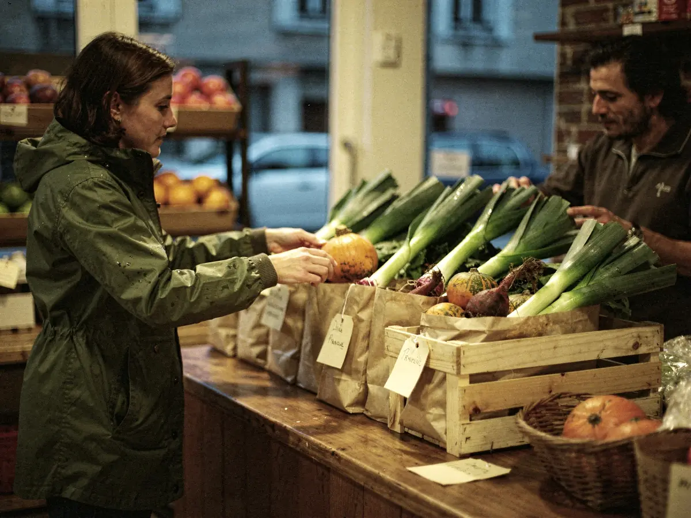
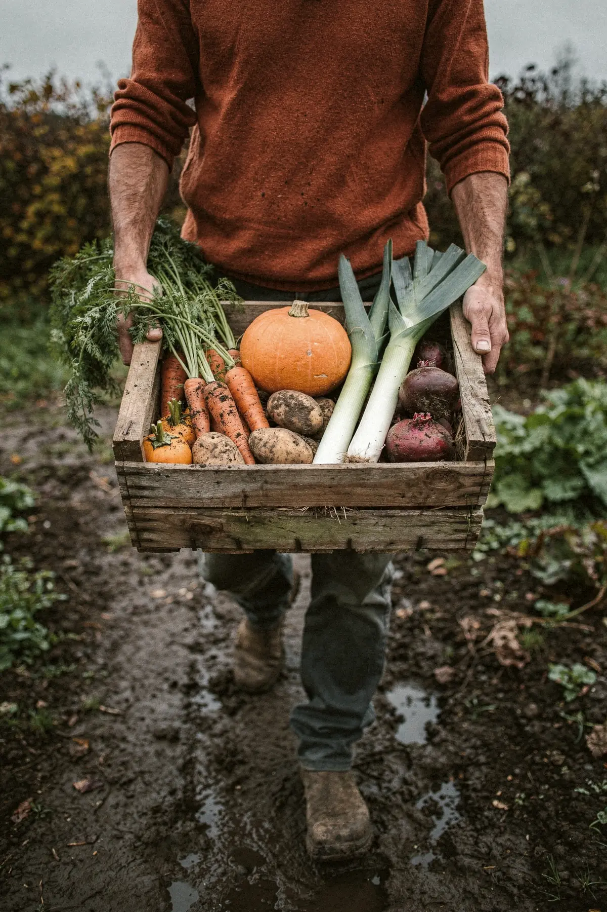

Le panier bio cueilli la veille
Récolté le lundi à 14 km de Nantes, retiré le mardi soir dans l'un de nos 11 relais. Dès 16 € la semaine, sans engagement.

Dans le petit panier de mardi
Novembre 4 chapitres

Quatre hectares en bio, à 14 km de Nantes
- foyers servis chaque mardi
- 312
- légumes dans l'année
- 60
- relais dans Nantes
- 11
- certifiée bio
Novembre, raconté panier par panier
-
Fiche recette
Velouté de potimarron
Claire
Semaine 45
Les courges sont rentrées
Potimarron, carottes des sables et poireaux.
-

Semaine 46
Le froid sucre les poireaux
Les premières gelées sucreront poireaux et chou de Milan.
-

Semaine 47
Betteraves, encore terreuses
À peine lavées, elles tiennent deux semaines au frais.
-

Semaine 48
Fenouil et mâche, fin du mois
Vous partez ? Mettez le panier en pause avant dimanche 20 h.


Claire et Mathieu, maraîchers à Saint-Julien
« On a repris la ferme en 2014. Chaque recette du panier, je l'ai cuisinée avant vous. »
- Bio certifié contrôle chaque année
- Rotation sur quatre ans engrais verts l'hiver
- Récolte le lundi retrait le mardi
Semaine 45 · retrait mardi
Ce qu'il y a dans le panier cette semaine
S'abonner, retirer, mettre en pause
-
1
Choisissez un panier et un relais
Petit ou grand, et le relais le plus proche.
-

2
Retirez-le le mardi soir
De 17 h à 19 h 30, donnez votre prénom au relais.
-
3
Mettez en pause d'un clic
Avant dimanche 20 h, la semaine suivante n'est pas facturée.
Onze relais nantais, ouverts le mardi soir
Chez un commerçant du quartier : épicerie, boulangerie ou café.

Ce qu'en disent les abonnés du mardi
« Je cuisine des légumes que je n'aurais jamais achetés. »
Inès · relais Talensac, petit panier
« On part souvent. Avec la pause, on ne paie jamais pour rien. »
Karim · relais Zola, grand panier
« Les poireaux de novembre n'ont pas le goût de ceux du supermarché. »
Hélène · relais Doulon, petit panier
Avis provisoires
Le même panier, au rayon bio du supermarché
Au rayon bio nantais, le petit panier coûte 3,11 € de moins. L'écart paie la récolte de la veille et un prix fixe à l'année.
Relevé provisoire du 2 novembre 2026
| Légume | Rayon bio |
|---|
Le journal de la ferme, chaque lundi
Tout le journalAvant de vous abonner
Je ne sais pas cuisiner tout ça ?
Chaque panier a sa fiche : deux recettes testées par Claire.
Et si je pars le week-end ?
Pause avant dimanche 20 h : la semaine n'est pas facturée.
Le petit panier suffit pour deux ?
Oui, pour trois soirs de cuisine par semaine.
Quand suis-je prélevé ?
Au mois, après le premier retrait. Arrêt en un clic.
Et si j'oublie de passer au relais ?
Le relais le garde jusqu'au mercredi midi.
Votre premier panier, dès mardi prochain
Rien n'est prélevé avant le premier retrait.
- Sans engagement, arrêt en un clic
- Pause avant dimanche 20 h
- Une fiche recette dans chaque panier